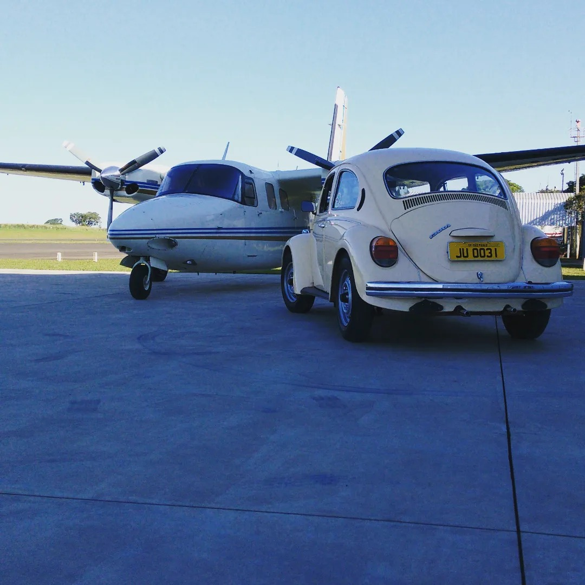
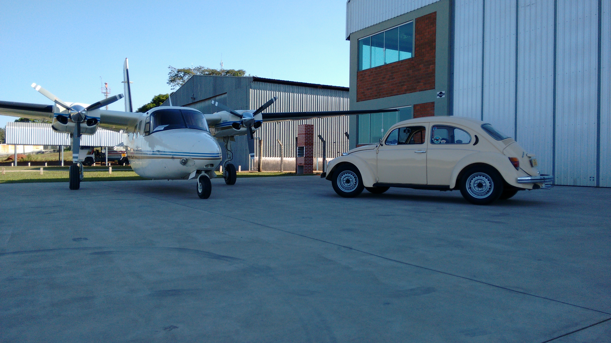
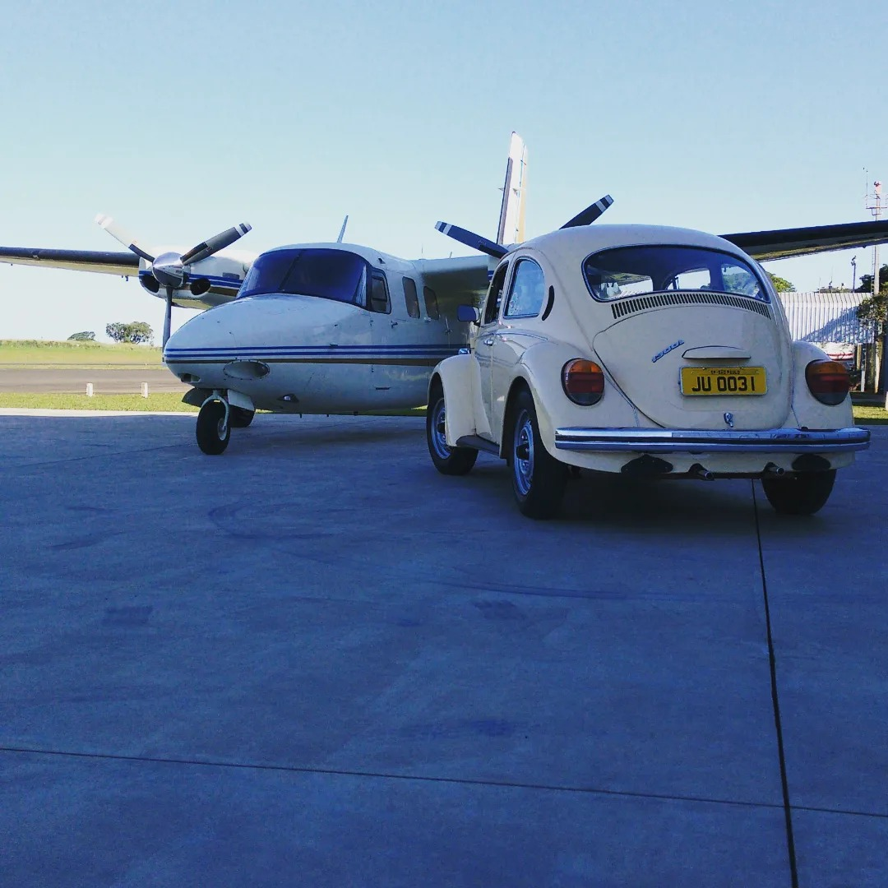
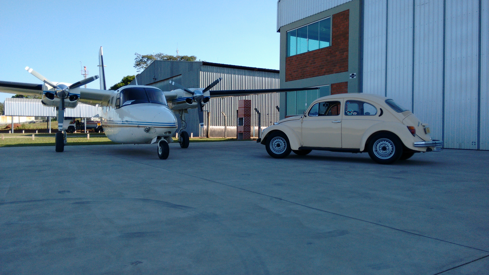

Fusca
O Fusca é muito mais que um carro. É uma memória afetiva sobre rodas, um símbolo da cultura automotiva brasileira. Em 1979, ele já era um fenômeno — agora, volta como ícone retrô que atravessa gerações com charme e simplicidade.
Características principais do Fusca
Robustez, economia e mecânica confiável são marcas registradas do Fusca. Ele foi feito para durar, com peças simples, fácil manutenção e um motor que faz história. Compacto por fora, espaçoso por dentro — um verdadeiro parceiro para todas as ocasiões.
Fusca: parecido com um avião?
Se você já ouviu o ronco do motor do Fusca, sabe: ele lembra o som de um avião antigo. Isso não é coincidência — o motor boxer refrigerado a ar tem herança aeronáutica. Seu desempenho todo-terreno e estabilidade em qualquer tipo de solo fazem dele quase um jato sobre o asfalto.
Ficha Técnica (Fusca 1979)
- Motor: 1.3 Boxer 4 cilindros, refrigerado a ar
- Potência: 46 cv
- Velocidade Máxima: 125 km/h
- Câmbio: Manual de 4 marchas
- Consumo médio: até 12 km/l
- Tração: Traseira
- Peso: 800 kg
Fotos do Fusca

 


